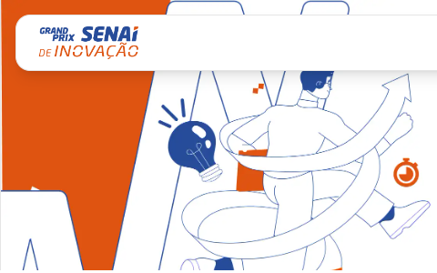

Este espaço reúne projetos desenvolvidos por alunos da qualificação profissional, onde acompanhei como professor, orientador e mentor e a proposta é valorizar produções técnicas, criatividade, aprendizagem aplicada e soluções conectadas a problemas reais. A iniciativa busca dar visibilidade a trabalhos que muitas vezes ficam apenas arquivados, transformando entregas de curso em evidências de competência, inovação e impacto social.
Prints e acessos rápidos para alguns dos trabalhos que mais se destacaram.
Clique em uma turma para acessar os alunos, os projetos, os materiais e os destaques.

Além das turmas regulares, atuei na mentoria de 5 grupos no Grand Prix SENAI de Inovação 2026, apoiando equipes na construção de soluções, refinamento da proposta, organização do pitch e fortalecimento da apresentação final.